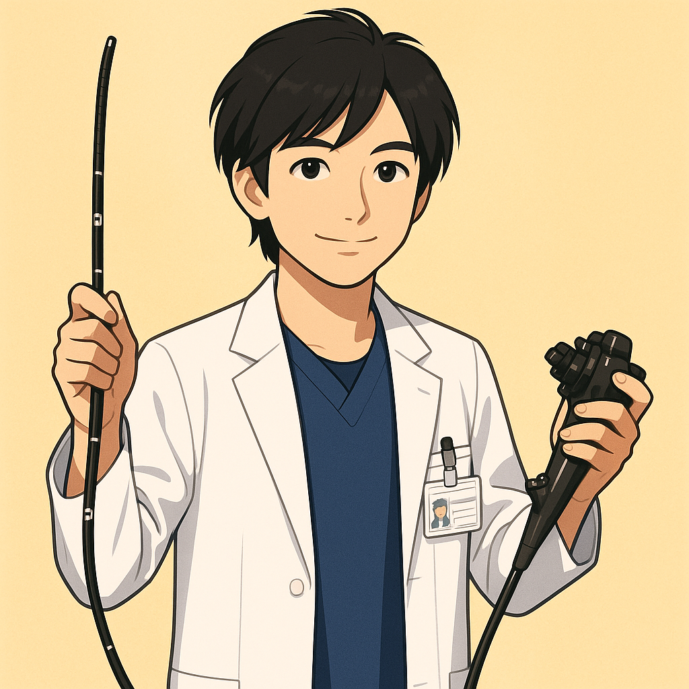

医師紹介
当院の医師をご紹介します。
患者様一人ひとりに寄り添った医療を提供いたします。

原口 紘 （はらぐち こう）
院長 / 医学博士
地域の皆様の健康を第一に考え、これまでの経験を活かし、質の高い医療を提供してまいります。特に消化器疾患の早期発見・治療に力を入れ、皆様が安心して相談できるクリニックを目指します。
専門分野
- 消化器内科一般
- 内視鏡検査（胃カメラ・大腸カメラ）
- ポリープ切除
- 肝臓・胆嚢・膵臓疾患
経歴・資格
- 〇〇大学医学部 卒業
- 〇〇大学病院 消化器内科 勤務
- 〇〇市民病院 消化器内科 部長
- 日本内科学会 認定内科医・総合内科専門医
- 日本消化器病学会 消化器病専門医
- 日本消化器内視鏡学会 消化器内視鏡専門医・指導医
- 他多数
原口 増穂 （はらぐち ますほ）
医師
女性医師として、きめ細やかな診療を心がけております。生活習慣病の管理や予防医療にも力を入れており、患者様一人ひとりのライフスタイルに合わせたアドバイスをさせていただきます。どんな些細なことでもお気軽にご相談ください。
専門分野
- 一般内科
- 生活習慣病（糖尿病、高血圧、脂質異常症）
- 予防医療・健康増進
- 女性の健康相談
経歴・資格
- 〇〇大学医学部 卒業
- 〇〇病院 内科 勤務
- 日本内科学会 認定内科医
- 日本糖尿病学会 会員
- 日本医師会認定産業医
- 他